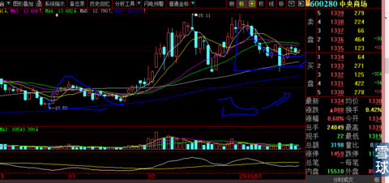
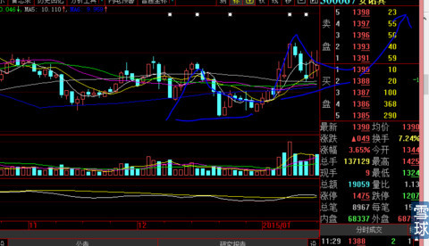
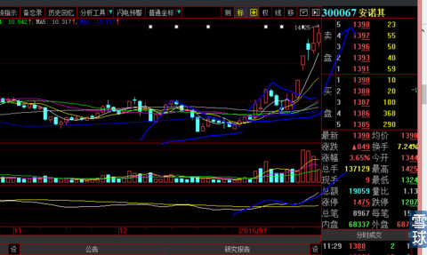
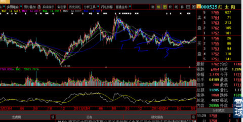

在股市想长期混下去，只有你杀人，不能人砍你，我个人觉得，对“足形线”要有基本的深入研究。因为是临时写，所以就先简单一点。今后再详细的从理论上、综合技术上、市场心理等各个层面上剖析这种技术形态形成的原理和实战经验。
足形线分为两种：1、进攻型；2、缓解下跌型
1、进攻型：所谓“足形线”，是为了有个形象的样子，长得就像“踢足球的脚”一样让大家好记。进攻性一般有两个最多三个后，股价就会飞。你们在大型圆弧底图形上去看，就明白我这个帖子，简直就是给你们送提款机。例如：下图


下图是上图的结果。

例如现在的601607上海医药，大家可以自己去研究
2、缓解下跌型：
下图这些足形线，就是抢反弹的人不断抢出来的，三次后，后期人看前几次抢反弹的人如此下场，就再也不敢抢了。所以下降足形线会慢慢停下来。构筑大的真实的历史大底。

 |
什么是典型的“上攻型足形K线组合”洗盘？炒的是心 2015-01-26 12:36:22 |
Copyright © 1996-2014 SINA Corporation All Rights Reserved.